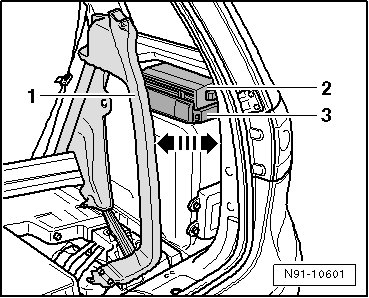
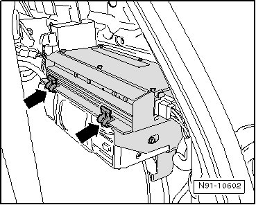
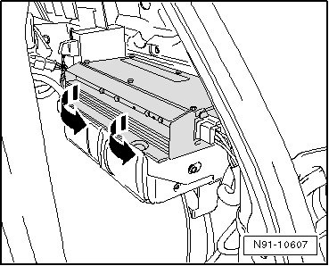
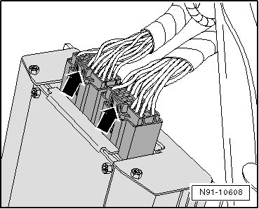
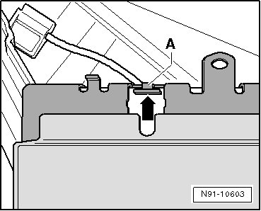

Sound System Amplifier
Sound System Amplifier
View of removed amplifier:

Location in right of luggage compartment:

1 CD Changer
2 Sound System Amplifier
Removing
Before starting repair work, perform the following:
- Switch off ignition, switch off all electrical consumers and remove ignition key.
- Remove center loading floor - A - in luggage compartment.

- Remove cover from lock carrier.
- Remove tie-downs - arrows -.

- Remove screw - A - and remove right loading floor.
- Remove right D-pillar trim.
- Remove screws - A - and unclip interior light - B - from trim.

- Unclip trim from D-pillar in - direction of arrow -.

- Unclip trim at side window in - direction of arrow -.

- Carefully pivot trim - 1 - in - direction of arrow - so that amplifier/CD changer - 2 and 3 - can be reached.

- Remove securing clips - arrows -.

- Remove amplifier in - direction of arrow -.

- Disengage connectors at amplifier - arrows - and remove them.

Installing
When inserting amplifier on base plate, ensure grove at back of amplifier is slid in - direction of arrow - and fits under bracket - A -.

Remaining installation in reverse order of removal.